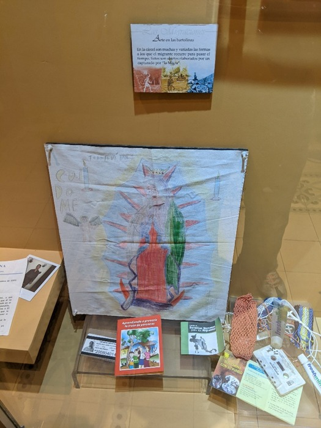

Migrant's backpack found at the Tijuana border and against the wall that divides Mexico and the United States. It was found inside a T-shirt.
Religion and the religious are two elements that combine. The Salvadoran who leaves also takes his beliefs with him, and the objects he leaves behind along the way are proof of this: La Magnifica, amulet " contra" bad wishes and companions, camándula, and "San Cristóbal" advocate of the travelers
Footwear found in Yuma dessert, abandoned by migrants.
Water is something indispensable, and every migrant travel with the necessary and indispensable for the crossing
Every migrant travel with groceries needed and easy to transport
At jail the migrant ramble with his wishes and frustrations with the hope given by the word. This Bible came along with a migrant since he went to jail until his return to Aeropuerto Internacional de Comalapa.
At jail, there is variety of forms that migrants use to spend their time. This are objectives used by a migrant captured by la “la Migra”.
